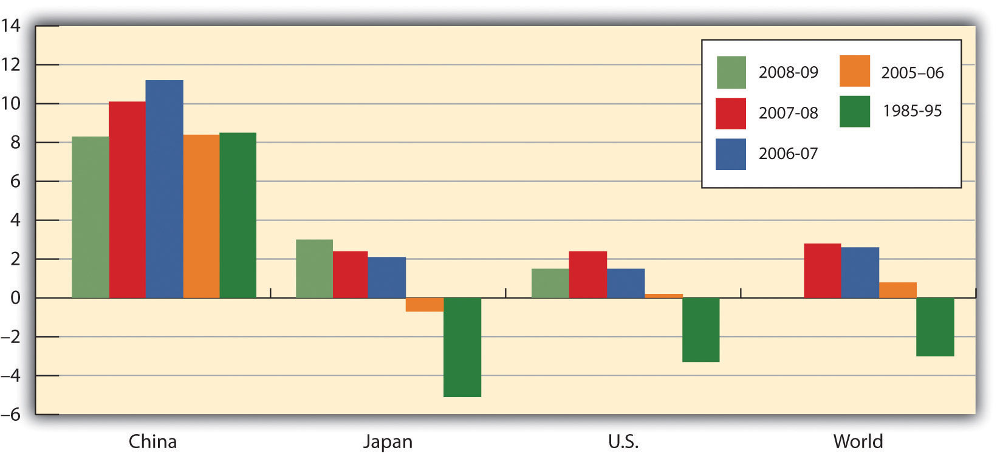

Just as leaders of the Soviet Union had to create their own command socialist systems, leaders of the economies making the transition to market capitalist economies must find their own paths to new economic systems. It is a task without historical precedent.
In this section we will examine two countries and the strategies they have chosen for the transition. China was the first socialist nation to begin the process, and in many ways it has been the most successful. Russia was the dominant republic in the old Soviet Union; whether its transition is successful will be crucially important. Before turning to the transition process in these two countries, we will consider some general problems common to all countries seeking to establish market capitalism in the wake of command socialism.
Establishing a system of market capitalism in a command socialist economy is a daunting task. The nations making the attempt must invent the process as they go along. Each of them, though, faces similar problems. Former command socialist economies must establish systems of property rights, establish banking systems, deal with the problem of inflation, and work through a long tradition of ideological antipathy toward the basic nature of a capitalist system.
A market system requires property rights before it can function. A property right details what one can and cannot do with a particular asset. A market system requires laws that specify the actions that are permitted and those that are proscribed, and it also requires institutions for the enforcement of agreements dealing with property rights. These include a court system and lawyers trained in property law and contract law. For the system to work effectively, there must be widespread understanding of the basic nature of private property and of the transactions through which it is allocated.
Command socialist economies possess virtually none of these prerequisites for market capitalism. When the state owned virtually all capital and natural resources, there was little need to develop a legal system that would spell out individual property rights. Governments were largely free to do as they wished.
Countries seeking a transition from command socialism to market capitalism must develop a legal system comparable to those that have evolved in market capitalist countries over centuries. The problem of creating a system of property rights and the institutions necessary to support it is a large hurdle for economies making the transition to a market economy.
One manifestation of the difficulties inherent in establishing clear and widely recognized property rights in formerly socialist countries is widespread criminal activity. Newly established private firms must contend with racketeers who offer protection at a price. Firms that refuse to pay the price may find their property destroyed or some of their managers killed. Criminal activity has been rampant in economies struggling toward a market capitalist system.
Banks in command socialist countries were operated by the state. There was no tradition of banking practices as they are understood in market capitalist countries.
In a market capitalist economy, a privately owned bank accepts deposits from customers and lends these deposits to borrowers. These borrowers are typically firms or consumers. Banks in command socialist economies generally accepted saving deposits, but checking accounts for private individuals were virtually unknown. Decisions to advance money to firms were made through the economic planning process, not by individual banks. Banks did not have an opportunity to assess the profitability of individual enterprises; such considerations were irrelevant in the old command socialist systems. Bankers in these economies were thus unaccustomed to the roles that would be required of them in a market capitalist system.
One particularly vexing problem facing transitional economies is inflation. Under command socialist systems, the government set prices; it could abolish inflation by decree. But such systems were characterized by chronic shortages of consumer goods. Consumers, unable to find the goods they wanted to buy, simply accumulated money. As command socialist economies began their transitions, there was typically a very large quantity of money available for consumers to spend. A first step in transitions was the freeing of prices. Because the old state-determined prices were generally below equilibrium levels, prices typically surged in the early stages of transition. Prices in Poland, for example, shot up 400% within a few months of price decontrol. Prices in Russia went up tenfold within six months.
One dilemma facing transitional economies has been the plight of bankrupt state enterprises. In a market capitalist economy, firms unable to generate revenues that exceed their costs go out of business. In command socialist economies, the central bank simply wrote checks to cover their deficits. As these economies have begun the transition toward market capitalism, they have generally declared their intention to end these bailouts and to let failing firms fail. But the phenomenon of state firms earning negative profits is so pervasive that allowing all of them to fail at once could cause massive disruption.
The practical alternative to allowing firms to fail has been continued bailouts. But in transitional economies, that has meant issuing money to failed firms. This practice increases the money supply and contributes to continuing inflation. Most transition economies experienced high inflation in the initial transition years, but were subsequently able to reduce it.
Soviet citizens, and their counterparts in other command socialist economies, were told for decades that market capitalism is an evil institution, that it fosters greed and human misery. They were told that some people become rich in the system, but that they do so only at the expense of others who become poorer.
In the context of a competitive market, this view of market processes as a zero-sum game—one in which the gains for one person come only as a result of losses for another—is wrong. In market transactions, one person gains only by making others better off. But the zero-sum view runs deep, and it is a source of lingering hostility toward market forces.
Countries seeking to transform their economies from command socialist to more market-oriented systems face daunting challenges. Given these challenges, it is remarkable that they have persisted in the effort. There are a thousand reasons for economic reform to fail, but the reform effort has, in general, continued to move forward.
China is a giant by virtually any standard. Larger than the continental United States, it is home to more than 1.3 billion people—more than one-fifth of the earth’s population. Although China is poor, its economy has been among the fastest growing in the world since 1980. That rapid growth is the result of a gradual shift toward a market capitalist economy. The Chinese have pursued their transition in a manner quite different from the paths taken by former Soviet bloc nations.
China was invaded by Japan during World War II. After Japan’s defeat, civil war broke out between Chinese communists, led by Mao Zedong, and nationalists. The communists prevailed, and the People’s Republic of China was proclaimed in 1949.
Mao set about immediately to create a socialist state in China. He nationalized many firms and redistributed land to peasants. Many of those who had owned land under the old regime were executed. China’s entry into the Korean War in 1950 led to much closer ties to the Soviet Union, which helped China to establish a command socialist economy.
China’s first five-year plan, launched in 1953, followed the tradition of Soviet economic development. It stressed capital-intensive production and the development of heavy industry. But China had far less capital and a great many more people than did the Soviet Union. Capital-intensive development made little sense. In 1958, Mao declared a uniquely Chinese approach to development, which he dubbed the Great Leap Forward. It focused on labor-intensive development and the organization of small productive units to quickly turn China into an industrialized country. Indeed, households were encouraged to form their own productive units under the slogan “An iron and steel foundry in every backyard.” The Great Leap repudiated the bonuses and other material incentives stressed by the Soviets; motivation was to come from revolutionary zeal, not self-interest.
In agriculture, the new plan placed greater emphasis on collectivization. Farmers were organized into communes containing several thousand households each. Small private plots of land, which had been permitted earlier, were abolished. China’s adoption of the plan was a victory for radical leaders in the government.
The Great Leap was an economic disaster. Output plunged and a large-scale famine ensued. Moderate leaders then took over, and the economy got back to its 1957 level of output by the mid-1960s.
Then, again in the mid-1960s, power shifted back towards the radicals with the launching of the Great Proletarian Cultural Revolution. During that time, students formed groups called “red guards” and were encouraged to expose “capitalist roaders.” A group dubbed the “Gang of Four,” led by Mao’s wife Jiang Qing, tried to steer Chinese society towards an ever more revolutionary course until Mao’s death in 1976.
Following Mao’s death, pragmatists within the Communist Party, led by Deng Xiaoping, embarked on a course of reform that promoted a more market-oriented economy coupled with retention of political power by the Communists. This policy combination was challenged in 1989 by a large demonstration in Beijing’s Tiananmen Square. The authorities ordered the military to remove the demonstrators, resulting in the deaths of several hundred civilians. A period of retrenchment in the reform process followed and lasted for several years. Then, in 1992, Deng ushered in a period of reinvigorated economic reform in a highly publicized trip to southern China, where reforms had progressed farther. Through several leadership changes since then, the path of economic reform, managed by the Communist Party, has continued. The result has been a decades-long period of phenomenal economic growth.
What were some of the major elements of the economic reform? Beginning in 1979, many Chinese provincial leaders instituted a system called bao gan dao hu—“contracting all decisions to the household.” Under the system, provincial officials contracted the responsibility for operating collectively owned farmland to individual households. Government officials gave households production quotas they were required to meet and purchased that output at prices set by central planners. But farmers were free to sell any additional output they could produce at whatever prices they could get in the marketplace and to keep the profits for themselves.
By 1984, 93% of China’s agricultural land had been contracted to individual households and the rate of growth in agricultural output had soared.
At the industrial level, state-owned enterprises (SOEs) were told to meet their quotas and then were free to engage in additional production for sale in free markets. Over time, even those production directives were discontinued. More importantly, manufacturing boomed with the development of township and village enterprises, as well as various types of private endeavors, with much participation from foreign firms. Most price controls were abolished. The entry of China into the World Trade Organization in 2001 symbolized a commitment towards moving even further down the road of economic reform.
In effect, China’s economy is increasingly directed by market forces. Even though five-year plans are still announced, they are largely advisory rather than commanding in nature. Recognizing the incomplete nature of the reforms, Chinese authorities continue to work on making the SOEs more competitive, as well as privatizing them, creating a social security system in which social benefits are not tied to a worker’s place of employment, and reforming the banking sector.
How well has the gradual approach to transition worked? Between 1980 and 2011, China had one of the fastest-growing economies in the world. Its per capita output, measured in dollars of constant purchasing power, more than quadrupled. The country, which as late as 1997 was one of the poorest of the 59 low-income-countries in the world, is now situated comfortably among the more prosperous lower-middle-income countries, according to the World Bank. Figure 34.2 "Soaring Output in China" compares growth rates in China to those achieved by Japan and the United States and to the average annual growth rate of all world economies between 1985 and 2009.
Figure 34.2 Soaring Output in China
China’s growth in per capita output from 1985 to 2009 greatly exceeded rates recorded for Japan, the United States, or the average of all nations.
Source: World Bank, World Development Reports, 1997, 1998, 2008, 2009, 2010, 2011 Table 1.
Where will China’s reforms lead? While the Chinese leadership has continued to be repressive politically, it has generally supported the reform process. The result has been continued expansion of the free economy and a relative shrinking of the state-run sector. Given the rapid progress China has achieved with its gradual approach to reform, it is hard to imagine that the country would reverse course. Given the course it is on, China seems likely to become a market capitalist economy—and a prosperous one—within a few decades.
Russia dominated the former Soviet Union. It contained more than half the Soviet people and more than three-fourths of the nation’s land area. Russia’s capital, Moscow, was the capital and center of power for the entire country.
Today, Russia retains control over the bulk of the military power that had been accumulated by the former Soviet Union. While it is now an ally of the United States, Russia still possesses the nuclear capability to destroy life on earth. Its success in making the transition to market capitalism and joining as a full partner in the world community thus has special significance for peace.
Russia’s shift toward market capitalism has its roots in a reform process initiated during the final years of the existence of the Soviet Union. That effort presaged many of the difficulties that have continued to plague Russia.
The Soviet Union, as we have already seen, had a well-established system of command socialism. Leading Soviet economists, however, began arguing as early as the 1970s that the old system could never deliver living standards comparable to those achieved in market capitalist economies. The first political leader to embrace the idea of radical reform was Mikhail Gorbachev, who became General Secretary of the Communist party—the highest leadership post in the Soviet Union—in 1985.
Mr. Gorbachev instituted political reforms that allowed Soviet citizens to speak out, and even to demonstrate, against their government. This policy was dubbed glasnost, or “openness.” Economically, he called for much greater autonomy for state enterprises and a system in which workers’ wages would be tied to productivity. The new policy, dubbed perestroika, or “restructuring,” appeared to be an effort to move the system toward a mixed economy.
But Mr. Gorbachev’s economic advisers wanted to go much further. A small group of economists, which included his top economic adviser, met in August 1990 to draft a radical plan to transform the economy to a market capitalist system—and to do it in 500 days. Stanislav Shatalin, a Soviet economist, led the group. Mr. Gorbachev endorsed the Shatalin plan the following month, and it appeared that the Soviet Union was on its way to a new system. The new plan, however, threatened the Soviet power elite. It called for sharply reduced funding for the military and for the Soviet Union’s secret police force, the KGB. It would have stripped central planners, who were very powerful, of their authority. The new plan called for nothing less than the destruction of the old system—and the elimination of the power base of most government officials.
Top Soviet bureaucrats and military leaders reacted to the Shatalin plan with predictable rage. They delivered an ultimatum to Mr. Gorbachev: dump the Shatalin plan or be kicked out.
Caught between advisers who had persuaded him of the necessity for radical reform and Communist party leaders who would have none of it, Mr. Gorbachev chose to leave the command system in place and to seek modest reforms. He announced a new plan that retained control over most prices and he left in place the state’s ownership of enterprises. In an effort to deal with shortages of other goods, he ordered sharp price increases early in 1991.
These measures, however, accomplished little. Black market prices for basic consumer goods were typically 10 to 20 times the level of state prices. Those prices, which respond to demand and supply, may be taken as a rough gauge of equilibrium prices. People were willing to pay the higher black market prices because they simply could not find goods at the state-decreed prices. Mr. Gorbachev’s order to double and even triple some state prices narrowed the gap between official and equilibrium prices, but did not close it. Table 34.1 "Official Versus Black Market Prices in the Soviet Union, 1991" shows some of the price changes imposed and compares them to black market prices.
Table 34.1 Official Versus Black Market Prices in the Soviet Union, 1991
| Item | Old price | New price | Black market price |
|---|---|---|---|
| Children’s shoes | 2–10 rubles | 10–50 rubles | 50–300 rubles |
| Toilet paper | 32–40 kopeks | 60–75 kopeks | 2–3 rubles |
| Compact car | 7,000 rubles | 35,000 rubles | 70,000–100,000 rubles |
| Bottle of vodka | 10.5 rubles | 10.5 rubles | 30–35 rubles |
Mikhail Gorbachev ordered sharp increases in the prices of most consumer goods early in 1991 in an effort to eliminate shortages. As the table shows, however, a large gap remained between official and black market prices.
Source: Komsomolskaya pravda
Perhaps the most important problem for Mr. Gorbachev’s price hikes was that there was no reason for state-owned firms to respond to them by increasing their output. The managers and workers in these firms, after all, were government employees receiving government-determined salaries. There was no mechanism through which they would gain from higher prices. A private firm could be expected to increase its quantity supplied in response to a higher price. State-owned firms did not.
The Soviet people faced the worst of economic worlds in 1991. Soviet output plunged sharply, prices were up dramatically, and there was no relief from severe shortages. A small group of government officials opposed to economic reform staged a coup in the fall of 1991, putting Mr. Gorbachev under house arrest. The coup produced massive protests throughout the country and failed within a few days. Chaos within the central government created an opportunity for the republics of the Soviet Union to declare their independence, and they did. These defections resulted in the collapse of the Soviet Union late in 1991, with Russia as one of 15 countries that emerged.
Boris Yeltsin, the first elected president of Russia, had been a leading proponent of market capitalism even before the Soviet Union collapsed. He had supported the Shatalin plan and had been sharply critical of Mr. Gorbachev’s failure to implement it. Once Russia became an independent republic, Mr. Yeltsin sought a rapid transition to market capitalism.
Mr. Yeltsin’s reform efforts, however, were slowed by Russian legislators, most of them former Communist officials who were appointed to their posts under the old regime. They fought reform and repeatedly sought to impeach Mr. Yeltsin. Citing health reasons, he abruptly resigned from the presidency in 1999, and appointed Vladimir Putin, who had only recently been appointed as Yeltsin’s prime minister, as acting president. Mr. Putin has since been elected and re-elected, though many observers have questioned the fairness of those elections as well as Mr. Putin’s commitment to democracy. Barred constitutionally from re-election in 2008, Putin became prime minister. Dimitry Medvedev, Putin’s close ally, became president.
Despite the hurdles, Russian reformers have accomplished a great deal. Prices of most goods have been freed from state controls. Most state-owned firms have been privatized, and most of Russia’s output of goods and services is now produced by the private sector.
To privatize state firms, Russian citizens were issued vouchers that could be used to purchase state enterprises. Under this plan, state enterprises were auctioned off. Individuals, or groups of individuals, could use their vouchers to bid on them. By 1995 most state enterprises in Russia had been privatized.
While Russia has taken major steps toward transforming itself into a market economy, it has not been able to institute its reforms in a coherent manner. For example, despite privatization, restructuring of Russian firms to increase efficiency has been slow. Establishment and enforcement of rules and laws that undergird modern, market-based systems have been lacking in Russia. Corruption has become endemic.
While the quality of the data is suspect, there is no doubt that output and the standard of living fell through the first half of the 1990s. Despite a financial crisis in 1998, when the Russian government defaulted on its debt, output recovered through the last half of the 1990s and Russia has seen substantial growth in the early years of the twenty-first century. In addition, government finances have improved following a major tax reform and inflation has come down from near hyperinflation levels. Despite these gains, there is uneasiness about the long-term sustainability of this progress because of the over-importance of oil and high oil prices in the recovery. Mr. Putin’s fight, whether justified or not, with several of Russia’s so-called oligarchs, a small group of people who were able to amass large fortunes during the early years of privatization, creates unease for domestic and foreign investors.
To be fair, overcoming the legacy of the Soviet Union would have been difficult at best. Overall, though, most would argue that Russian transition policies have made a difficult situation worse. Why has the transition in Russia been so difficult? One reason may be that Russians lived with command socialism longer than did any other country. In addition, Russia had no historical experience with market capitalism. In countries that did have it, such as the Czech Republic, the switch back to capitalism has gone far more smoothly and has met with far more success.
Table 34.1 "Official Versus Black Market Prices in the Soviet Union, 1991" shows three prices for various goods in the Soviet Union in 1991. Illustrate the market for compact cars using a demand and supply diagram. On your diagram, show the old price, the new price, and the black market price.
The transition of eastern Germany was supposed to be the easiest of them all. Quickly merged with western Germany, given its new “Big Brother’s” deep pockets, the ease with which it could simply adopt the rules and laws and policies of western Germany, and its automatic entry into the European Union, how could it not do well? And yet, eastern Germany seems to be languishing while some other central European countries that had also been part of the Soviet bloc are doing much better. Specifically, growth in real GDP in eastern Germany was 6% to 8% in the early 1990s, but since then has mostly been around 1%, with three years of negative growth in the early 2000s. In the early 1990s, the Polish economy grew at less than half east Germany’s rate, but since then has averaged more than 4% per year. Why the reversal of fortunes?
Most observers point to the quick rise of wages to western German levels, despite the low productivity in the east. Initially, Germans from both east and west supported the move. East Germans obviously liked the idea of huge wage increases while west German workers thought that prolonged low wages in the eastern part of the country would cause companies to relocate there and saw the higher east German wages as protecting their own jobs. While the German government offered subsidies and tax breaks to firms that would move to the east despite the high wages, companies were by and large still reluctant to move their factories there. Instead they chose to relocate in other central European countries, such as the Czech Republic, Slovakia, and Poland. As a result, unemployment in eastern Germany has remained stubbornly high at about 15% and transfer payments to east Germans have totaled $1.65 trillion with no end in sight. “East Germany had the wrong prices: Labor was too expensive, and capital was too cheap,” commented Klaus Deutsch, an economist at Deutsche Bank.
While the flow of labor has primarily been from Poland to Germany since the break-up of the Soviet bloc, with mostly senior managers moving from Germany to Poland, there are some less-skilled, unemployed east Germans who are starting to look for jobs in Poland. Tassilo Schlicht is an east German who repaired bicycles and washing machines at a Soviet-era factory and lost his job in 1990. He then worked for a short time at a gas station in his town for no pay with the hope that the experience would be helpful, but he was never hired. He undertook some government-sponsored retraining but still could not find a job. Finally, he was hired at a gas station across the border in Poland. The pay is far less than what employed Germans make for doing similar jobs but it is twice what he had been receiving in unemployment benefits. “These days, a job is a job, wherever it is.”
Sources: Marcus Walker and Matthew Karnitschnig, “Eastern Europe Eclipses Eastern Germany,” Wall Street Journal, November 9, 2004, p. A16; Keven J. O’Brien, “For Jobs, Some Germans Look to Poland,” New York Times, January 8, 2004, p. W1; Doug Saunders, “What’s the Matter with Eastern Germany?” The Globe and Mail (Canada), November 27, 2007, p. F3.
There is a shortage of cars at both the old price of 7,000 rubles and at the new price of 35,000, although the shortage is less at the new price. Equilibrium price is assumed to be 70,000 rubles.